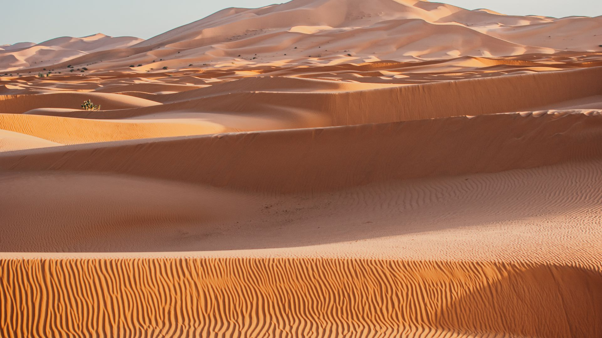
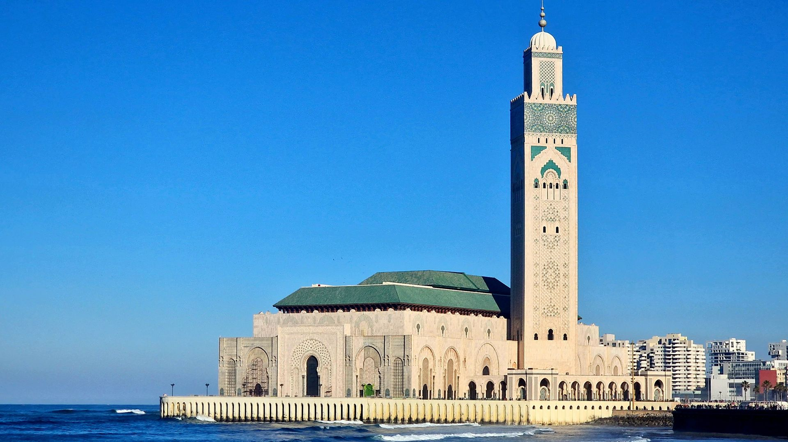

Primavera
Temperaturas agradáveis, vales verdes e amendoeiras em flor. A época ideal para o Saara e as cidades imperiais.
★★★★★ Melhor época
Guia de viagem do Marrocos
Tudo o que você precisa saber antes de viajar para o Marrocos: a melhor época para ir, os destinos imperdíveis de Marrakech e Fez até o Saara, a cultura e a gastronomia marroquina e dicas práticas dos nossos motoristas-guia locais.
Destinos imperdíveis
Das cidades imperiais às dunas douradas: os lugares que mais encantam os nossos viajantes.

A Cidade Vermelha: praça Jemaa el-Fna, souks, jardins e riads.
Ver tours →
A maior medina sem carros do mundo e o famoso curtume Chouara.
Ver tours →
Passeio de camelo e noite sob as estrelas nas dunas de Erg Chebbi, em Merzouga.
Ver tours →
Aldeias berberes, cachoeiras e vales verdes a uma hora de Marrakech.
Ver tours →
A metrópole moderna do Marrocos e a impressionante Mesquita Hassan II.
Ver tours →
A porta para a Europa, perto da cidade azul de Chefchaouen.
Ver tours →Quando ir
O Marrocos pode ser visitado o ano todo, mas cada estação oferece uma experiência diferente.
Temperaturas agradáveis, vales verdes e amendoeiras em flor. A época ideal para o Saara e as cidades imperiais.
★★★★★ Melhor épocaMuito calor no interior e no deserto. Perfeito para a costa atlântica e o frescor do Atlas.
★★★ Costa e montanhaDias quentes, menos turistas e a colheita de tâmaras nos oásis. Excelente para tours pelo deserto.
★★★★★ Melhor épocaDias ensolarados, mas noites frias no deserto e neve nos picos do Alto Atlas. Ótimo para fotografia.
★★★★ Sol e tranquilidade
Cultura e gastronomia
O Marrocos mistura influências árabes, amazigh (berberes), africanas e andaluzas numa das culturas mais ricas do mundo.
Dicas de viagem
Conselhos práticos dos nossos motoristas-guia locais para aproveitar o Marrocos com tranquilidade.
Perguntas frequentes
A primavera (de março a maio) e o outono (de setembro a novembro) são a melhor época para viajar ao Marrocos, com temperaturas agradáveis tanto nas cidades imperiais quanto no deserto do Saara.
Para uma primeira viagem, de 7 a 10 dias permitem combinar Marrakech, o Atlas, o deserto do Saara e Fez. Com 3 ou 4 dias dá para fazer um tour ao deserto saindo de Marrakech.
O Marrocos é um dos países mais visitados da África e, em geral, é considerado um destino seguro para viajantes. Como em qualquer lugar, tome as precauções habituais nas medinas movimentadas. Viajar com um motorista-guia local privado facilita tudo.
O dirham marroquino (MAD). É uma moeda fechada, por isso é obtida na chegada em casas de câmbio ou caixas eletrônicos. Nos souks e lojinhas é preciso dinheiro.
Roupas leves e confortáveis que cubram ombros e joelhos, um lenço, bons sapatos para caminhar e agasalhos para as noites no deserto.
Conte as suas datas e a nossa equipe local criará o seu tour privado pelo Marrocos: orçamento grátis e sem compromisso.